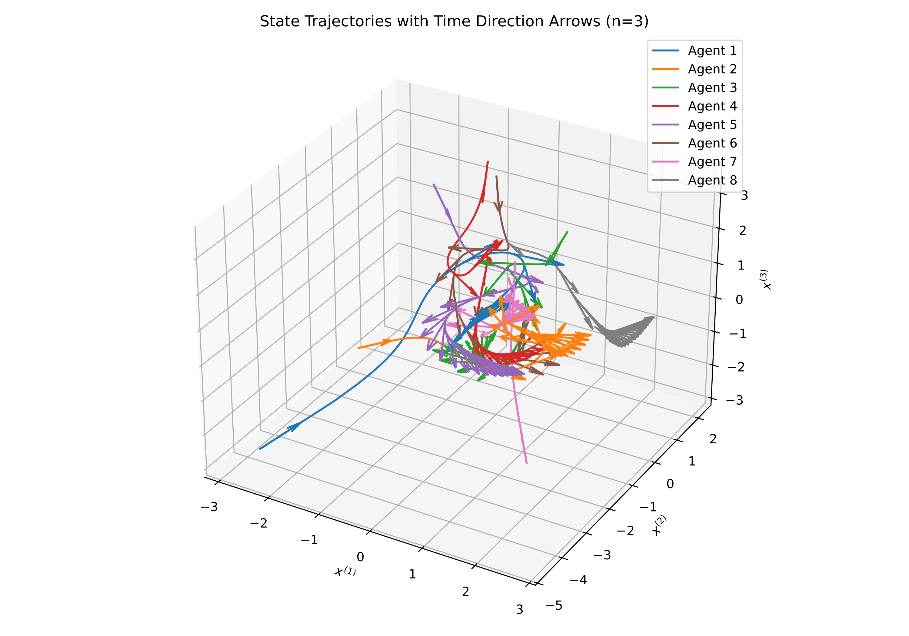
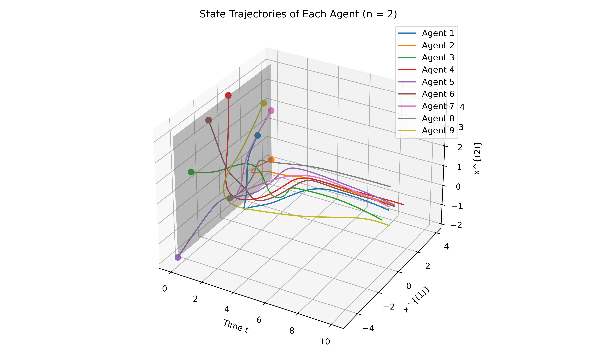
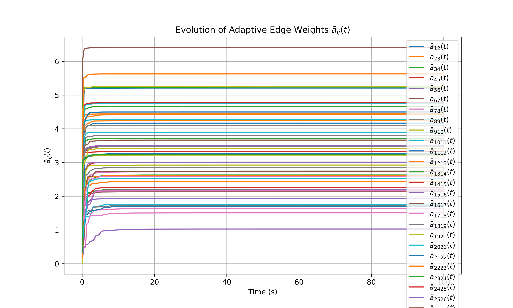
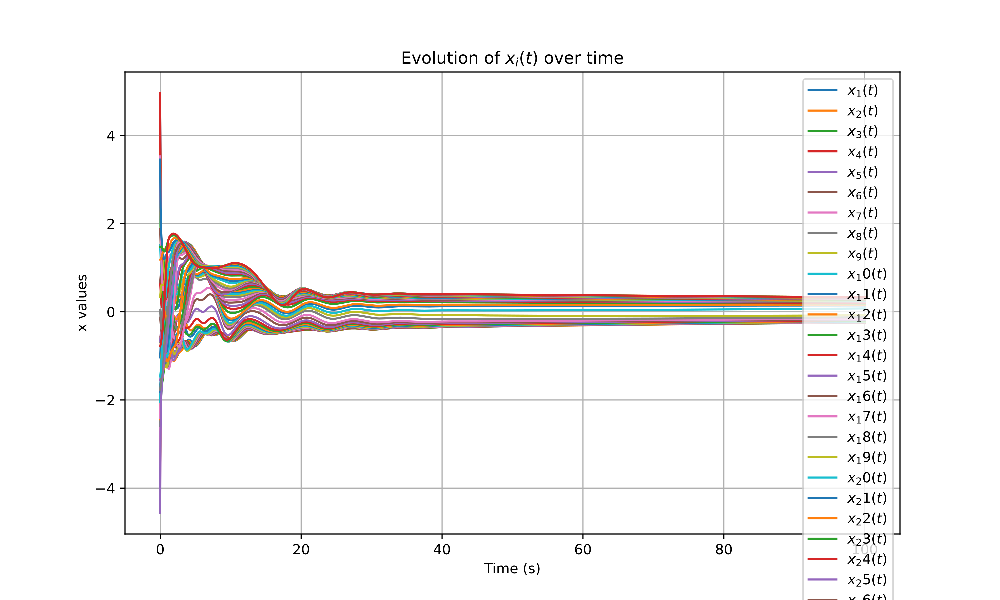

Featured Projects
Franka Gazebo Adaptive Control with Model Mismatch and Disturbance

A complete Gazebo simulation framework for adaptive torque control of a 7-DOF Franka FR3 robotic manipulator under model uncertainty and external disturbances.
The framework integrates computed torque control with online RBF neural network adaptive compensation to improve trajectory tracking performance under dynamic uncertainties.
The system is implemented and validated in ROS 2 Jazzy and Gazebo Sim, including robot dynamics modeling with Pinocchio, custom controller development, and real-time torque command execution.
Implemented with:
ROS 2 Jazzy,
Gazebo Sim,
ros2_control,
Pinocchio,
C++,
Python,
RBF neural network adaptive compensation.
GitHub Repository: https://github.com/hengsleep/Franka_Gazebo_RBF_adaptive_control_Prj
Adaptive Control of Robotic Manipulators with RBF and σ-Modification

A nonlinear adaptive control framework for uncertain multi-joint robotic manipulators using radial basis function (RBF) neural networks for online uncertainty approximation.
The proposed controller combines:
Computed Torque Control,
Lyapunov-based stability analysis,
RBF neural network approximation,
and σ-modification adaptive laws.
The framework provides robust trajectory tracking performance under unknown system dynamics and external disturbances, with theoretical analysis based on Uniform Ultimate Boundedness (UUB).
Implemented with:
MATLAB,
Simulink,
nonlinear robot dynamics modeling,
adaptive control algorithms,
and neural network compensation.
GitHub Repository: https://github.com/hengsleep/RBF_compensation_Robot_control_Prj
DARA for Multi-Agent Systems under Lipschitz Continuous




A distributed optimization framework for adaptive resource allocation in multi-agent systems over directed communication networks.
The proposed approach investigates cooperative decision-making and distributed algorithms under locally available information constraints.
The framework is designed for networked systems with heterogeneous local objective functions, including cases with Lipschitz continuous cost functions.
GitHub Repository: https://github.com/hengsleep/DARA_Lipschitz_continuous_Prj